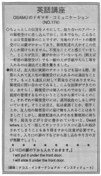

ドアの下から入れておきます。
I will put it under the front door. In the states, the mailbox belongs to the government. If you put something in the mailbox, the carrier could take it away. If you want to drop off something for your friend, you should put it under the door, under the mat or somewhere you both agree to. In the mailbox, you take the risk of having the carrier take it. Letters that can't be delivered are sent to S.F. and kept in a dead letter department for awhile. So it's important to make sure you've got the right address and to put a return address in case it can't be delivered.
ちょっとした伝言をメモにして、知り合いのアパートの郵便受けに差し込んでおく、日本でなら、こんなことは日常茶飯事のことですが、当地のアパートの郵便受けには鍵がかかっており、郵便配達の人かそこの住人しか開けられません。不便なことだと感じていました。ところが先日、鍵がかかっていないもの（例えば一軒屋の郵便受け）でも一般の人が手紙やちらし等を入れるのは違法だと聞き驚きました。
例えば、友人宅に映画のチケットなどを届ける際、封筒に入れて友人宅の郵便受けに入れるのは違法なことです。もっとも違反に対して罰金などはありません。郵便局に問い合わせてみると、こんな法律ができたのは、おそらく、郵便受けは個人のものではなく、連邦政府の管理するものというところから来ているとのこと。それぞれの郵便受けには、連邦政府のしるしが付いています。そうとは言え、私は夜遅くとか、朝早くとか、友人宅の郵便受けに届け物を入れることはありました！しかし、郵便配達の人がそれを郵便局に持ち帰り、宛名などが十分に書かれていないと、Dead lettersとして一括してサンフランシスコに送られ処分されてしまうこともあり得ますから注意が必要です。やはり、入り口の扉の下などから差し込むやり方の方が無難でしょう。
入り口の扉の下から入れておきます。
I will put it under the front door.
I will slide it under the front door.

| © 1995-2013 NACOS International Institute. All Rights Reserved. |